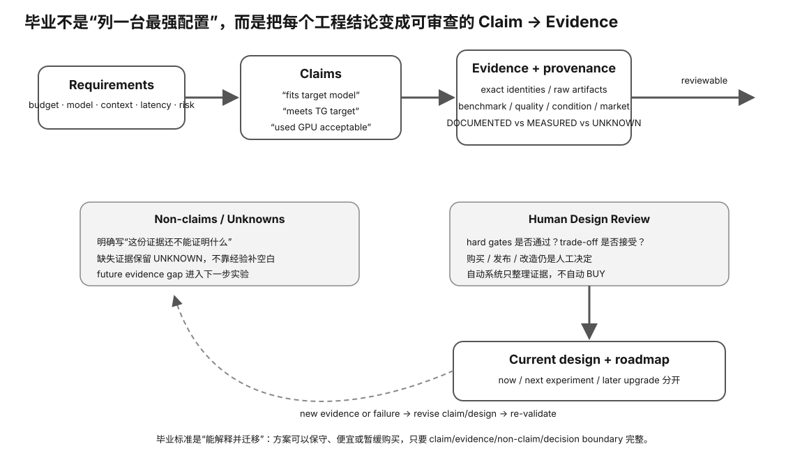

开始前，你应该能够提交一条完整 Evidence chain：需求与 workload → 约束/假设 → primary/documented facts → 计算或实验 → 质量与性能结果 → 风险/unknowns → decision。你也应该能明确区分 measured、documented、derived 与 hypothesis。
真正的采购或部署评审不会只问“你推荐哪张卡”，而会继续追问：为什么这个 workload？为什么这个 context？质量怎么验证？兼容性依据是什么？PSU、RAM、散热、恢复、SLO 呢？价格变化后结论还成立吗？哪些地方其实还不知道？
本节要解决的是：你能否把前 48 个 Slice 的知识压缩成一个别人可以复查、挑战、重算并最终接受或拒绝的 Machine Design Review？毕业标准不是配置单漂亮，而是每个关键结论都能追溯到证据与明确边界。

“RTX xxxx + 64GB RAM + 2TB SSD”
这只能说明你列了零件。
毕业交付物要回答：
为什么这个 workload 需要这些约束 → 每个关键结论由什么 Evidence 支撑 → 如果失败，怎么改 → 什么证据出现后才升级
known FAIL → REVISE critical UNKNOWN → BLOCKED all required PASS → ACCEPT
Experiment 91 已经检查：
Gate + PASS / FAIL / UNKNOWN + source
毕业层还要问：
这个 source 真的足够证明这个 claim 吗？
例如：
Claim: 目标 backend 能稳定跑这个模型 Evidence: exact runtime version exact model hash actual run log benchmark manifest
只有“PCIe 里看见 GPU”并不够。
官方文档 → 厂商发布规格/支持声明 runtime log → 这次真实环境识别/执行 benchmark trace → 这套 workload 下的测量结果 seller listing → 卖家声称了什么
卖家说 24 GiB，不等于你已经测到 24 GiB。
例如你得到：
10 分钟 sustained benchmark PASS
它并不能自动证明：
一年 24/7 不会坏
所以报告要主动写：
What this evidence does NOT prove
如果 30 GiB 目标装不进 24 GiB：
Revision A: smaller quant/model Revision B: lower context/concurrency Revision C: different GPU Revision D: multi-GPU
每个 Revision 都必须回答：
修哪个失败？ 改哪个变量？ 需要补什么新 Evidence？ 带来什么新成本/风险？
差的路线图：
以后换更强显卡 以后加内存
好的路线图：
当 VRAM headroom < target → 再评估模型/量化/多卡 当 serving TTFT p95 超过 SLO → 先测 queue/KV/compute → 再决定升级哪一层
NOW 当前目标必须完成的修改/证据 NEXT 有明确触发条件的下一能力 LATER 只有测到对应瓶颈才做的优化
all required gates PASS all material claims traceable → ACCEPT
known VRAM hard fail no blocking unknown revision directly addresses it → REVISE
modular PSU cable compatibility unknown → BLOCKED → do not buy yet
写作再漂亮，也不能补救：
fatal gate FAIL evidence missing decision inconsistent
goal/workload → model dossier → machine architecture → hard-gate matrix → Evidence index → benchmark/quality/SLO → TCO/risk → revisions → upgrade roadmap → non-claims → ACCEPT / REVISE / BLOCKED
不是记住最多型号，而是遇到一台没见过的机器时，你仍然能：
定义目标 → 找证据 → 识别硬门槛 → 测量 → 拒绝猜测 → 修改设计 → 解释边界
硬件门槛：L0 可以完成完整设计评审；真实毕业报告 Experiment 93 需要你未来选定的 learner-owned target。
成本：0 元设计主路径；毕业不要求为了“通过”而购买硬件。
风险：safe。毕业结论允许 ACCEPT / REVISE / BLOCKED；证明“不该买”同样是合格结果。
先做 Experiment 92：graduation design review。以后开始正式学习并选定自己的机器目标后，再做 Experiment 93：real graduation report。
提交完整 Machine Design Review：
goal/workload → model architecture dossier → machine hard-gate matrix → Evidence index → benchmark / quality / serving SLO → power / thermal / storage / host RAM → TCO / secondhand risk → revisions → evidence-triggered upgrade roadmap → non-claims → ACCEPT / REVISE / BLOCKED
如果尚无真实机器，所有需要真机的数据明确标记 NOT-YET-MEASURED，不得用 synthetic 结果冒充。
真正的 transfer 是换一张从没见过的 GPU、一个新模型、一个新 runtime 后，你仍然会：定义目标 → 找一手资料 → 建模 → 测量 → 判断 Evidence → 修改设计。
goal → workload contract → model dossier → candidate machine → gate matrix → evidence → measurements → decision → revision / upgrade triggers
任何读者都应该能顺着路径找到“这个结论来自哪份原始证据”。
Goal: 二手双 GPU Local LLM server Evidence: GPU identity PASS VRAM PASS runtime PASS performance PASS PSU total watts PASS modular cable compatibility UNKNOWN Decision: BLOCKED
如果报告明确指出 cable provenance 是安全关键 unknown，并给出最小解决路径，那么这是比“先买回来试试”更高质量的工程结果。
FAIL: VRAM insufficient good revision: reduce context / different quant / different GPU → rerun affected quality + performance + memory gates bad revision: “升级更强显卡”
例如：
if TTFT p95 > 800 ms AND queue_wait dominates AND GPU/KV saturated → evaluate capacity upgrade
而不是“以后有钱就换 5090”。课程要培养的是由证据触发升级，而不是硬件欲望触发升级。
| 维度 | 毕业要求 |
|---|---|
| Understand | 能解释各层机制与限制 |
| Investigate | 能从 claim 找到合适 Evidence |
| Choose | 能用 hard gates 做机器/模型选择 |
| Practice | 能产生可复现实验与原始记录 |
| Modify | 能在失败后只改必要变量并重新验证 |
毕业报告允许最终状态是 REVISE 或 BLOCKED；真正失败的是把未知写成已知，或让一个不可复核的结论伪装成完成。